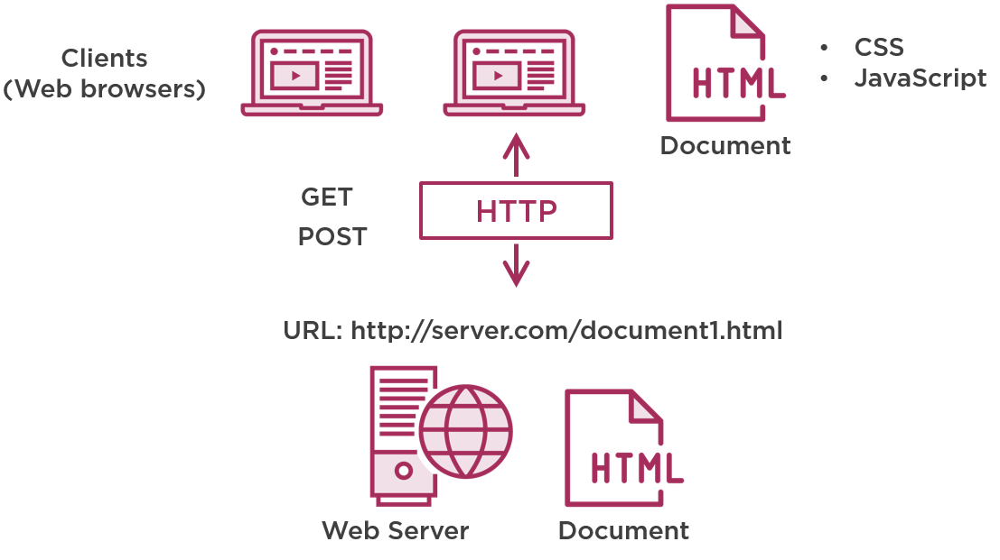

Übersicht
Kapitel 1 erläutert die Grundprinzipien des World Wide Webs (WWW), des Client-Server-Prinzips, des ISO/OSI-Schichtenmodells und HTTP-Requests. Zudem werden die gebräuchlichsten Begriffe kurz vorgestellt.

In Kapitel 2a gehen wir auf die HyperText Markup Language (HTML) als Auszeichnungssprache für Webseiten ein und erläutern gängige Begriffe in diesem Kontext.
Kapitel 2b widmet sich den Cascading Style Sheets (CSS) mit denen das Aussehen von Webseiten gestaltet werden kann.
Kapitel 3 ist noch in Bearbeitung und wird sich um JavaScript (JS) als dynamische Komponente einer Webseite drehen.